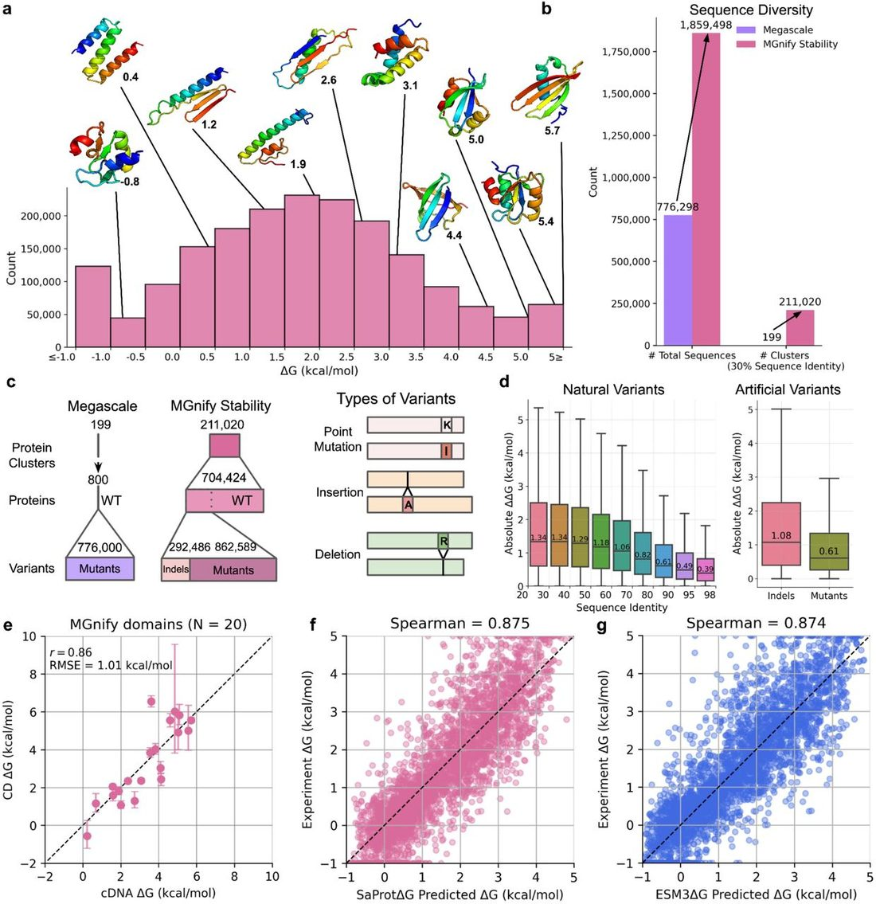
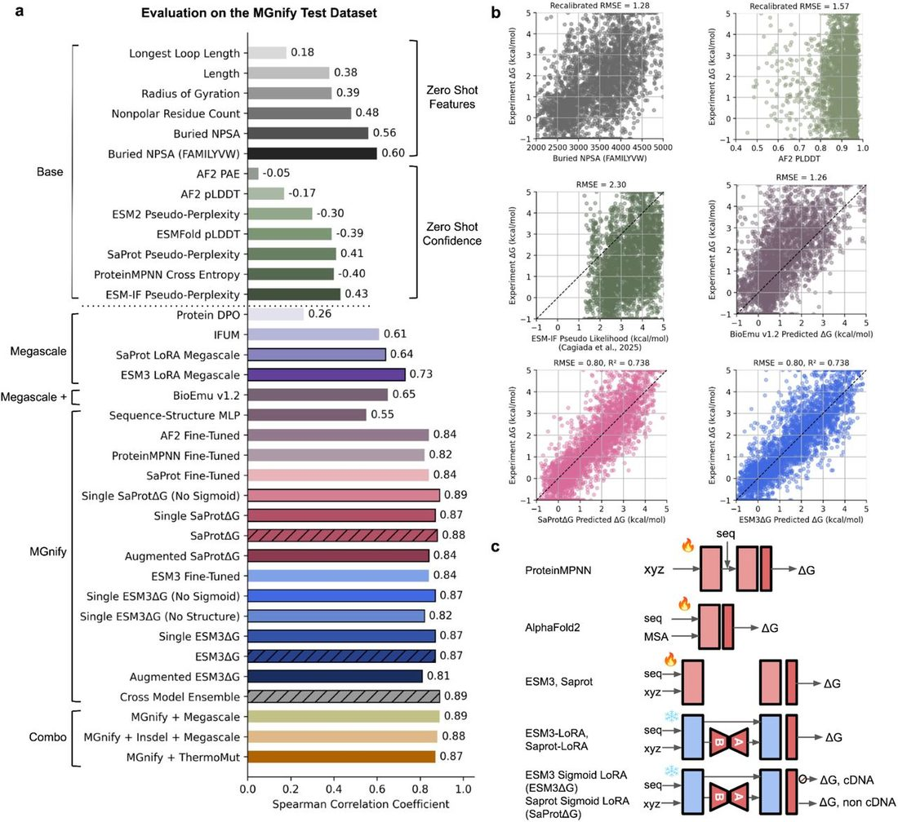
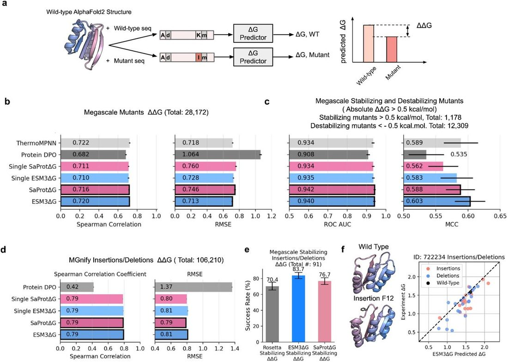
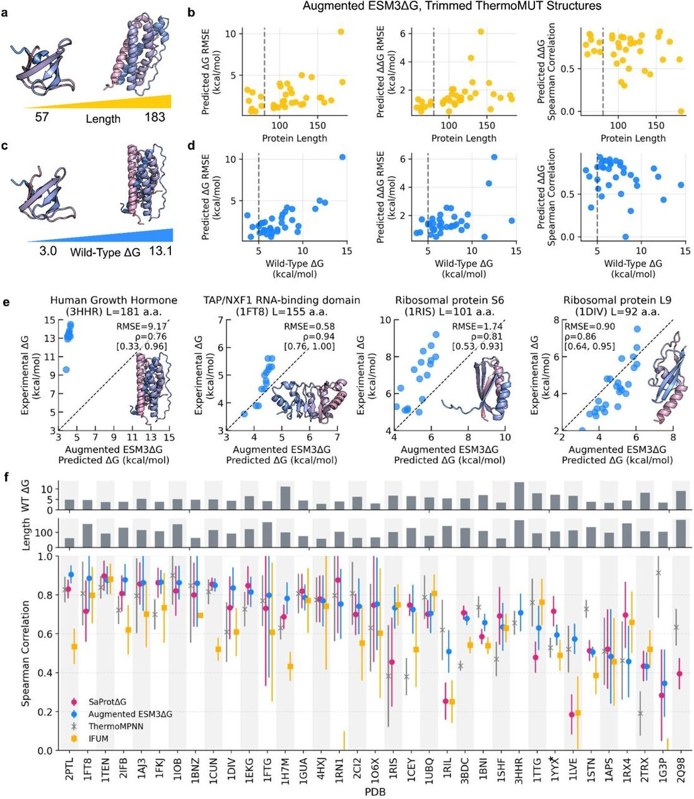
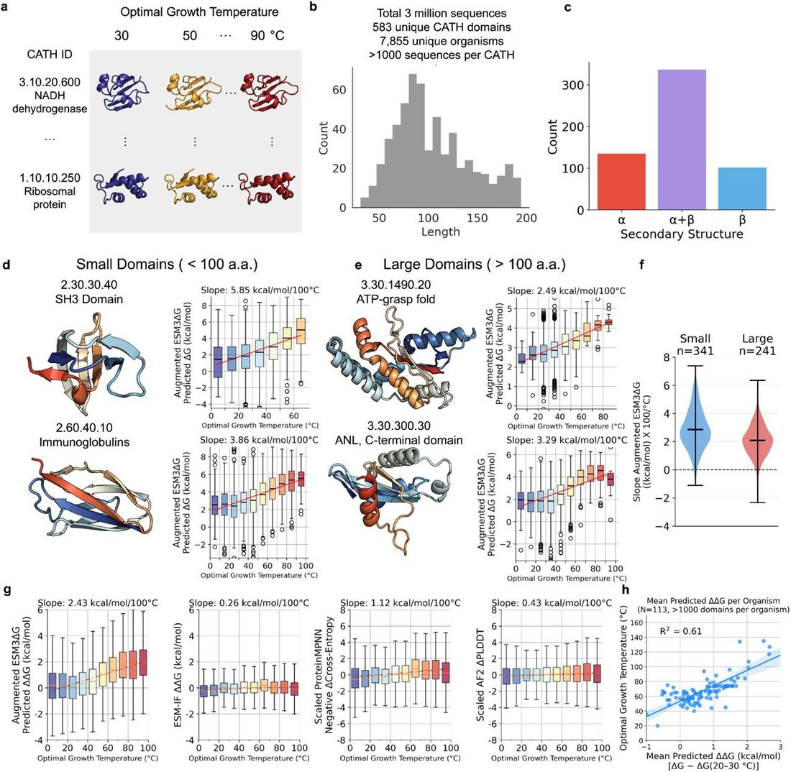
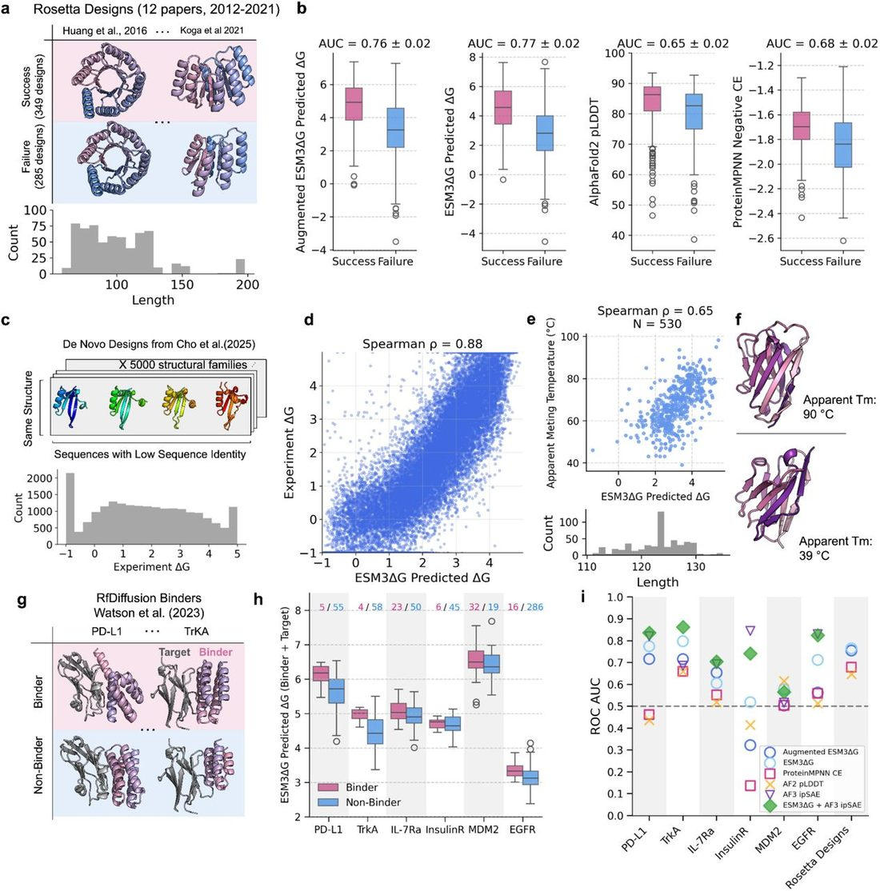

Accurate protein stability prediction for small domains using mega-scale experiments
Abstract
Predicting absolute protein folding stability is a long-standing challenge in biophysics, with broad applications in protein design and in understanding genetic variation and evolution. Physics-based simulations have shown limited success at predicting stability and are often computationally intractable, and machine learning methods have been constrained by the lack of sufficiently large experimental datasets. We recently introduced cDNA display proteolysis, a cell-free approach that can measure folding stability for nearly one million protein domains in parallel. Here, we applied this method to measure stability for 1.8 million diverse protein domains 60-80 amino acids in length primarily taken from the MGnify metagenomic database and spanning over 200,000 sequence families. Using this new "MGnify Stability dataset", we developed the predictive models SaProtΔG and ESM3ΔG, which accurately predict absolute folding stability for small domains with root mean squared error of 0.8 kcal/mol over a 6 kcal/mol range (Spearman rank correlation of 0.88). These predictors show high accuracy at predicting effects of substitutions, insertions, and deletions, successfully identify global trends toward higher stability in thermophilic organisms, and improve discrimination of stable and unstable computationally designed proteins. Our results illustrate how megascale biophysical measurements can complement existing evolutionary and structural data to enable accurate absolute stability prediction for small domains.
Introduction
Predicting protein folding stability (the ratio of folded to unfolded molecules at equilibrium for a specific protein sequence) remains one of the oldest unsolved problems in molecular biophysics ( Richards 1997 ). Over 50 years ago, researchers recognized that different proteins varied widely in stability ( Pace and Alexander 1971 ), yet no simple physicochemical properties ( Goldsack 1970 ; Singleton and Amelunxen 1973 ) or structural features ( Matthews et al. 1974 ; Grütter et al. 1979 ) could be found that clearly and universally differentiated higher and lower stability proteins. This complexity was reinforced by protein design studies that unintentionally produced numerous protein-like amino acid sequences ( Kamtekar et al. 1993 ) with plausible three-dimensional structures ( Koga et al. 2012 ; Rocklin et al. 2017 ; Koepnick et al. 2019 ; Kim et al. 2022 ; Haddox et al. 2025 ; Cho et al. 2025 ; Dantas et al. 2003 ) that lacked any observable folding stability ( Pan and Kortemme 2021 ; Garcia et al. 2026 ). The fundamental difficulty is that stability reflects the balance of many large, opposing energetic terms: folding leads to a large loss of conformational entropy and protein-solvent interactions ( Clark et al. 2020 ) that must be overcome by favorable intra-protein interactions including hydrophobic burial, van der Waals interactions, hydrogen bonding, and electrostatic interactions ( Kauzmann 1959 ; Dill 1990b ; Privalov 1990 ). These large opposing energies (in excess of 100 kcal/mol, ( Schellman 1997 )) result in marginal stabilities typically below 6 kcal/mol ( Walker et al. 2019 )—on the order of just a few interactions ( Nick Pace et al. 2014 ). As a result, every interaction can play a pivotal role in folding stability (memorably described by Petsko: “So is EVERYTHING Important EVERYWHERE?” ( Petsko 2001 )). Despite this complexity, understanding and predicting folding stability remains centrally important due to the critical role stability plays across scientific areas, including in human disease ( Beltran et al. 2025 ; Dobson 2003 ), protein evolution ( Zeldovich et al. 2007 ; Bloom et al. 2006 ), therapeutic development ( Roberts 2014 ; Rahban et al. 2023 ), and biotechnology ( Sumida et al. 2024 ; Stimple et al. 2020 ; Romero and Arnold 2009 ). Furthermore, because the same biophysical forces that drive folding also drive protein-protein interactions ( Almeida et al. 2021 ; Deng et al. 2025 ), protein-drug binding ( Myslinski et al. 2011 ; Klebe 2015 ), conformational change, and allostery ( Radley et al. 2003 ), accurate measurements and models of stability may provide a route to illuminate these areas as well.
Several other challenges have limited the development of accurate models to predict stability. First, folding stability depends on the full ensemble of both folded and unfolded conformations ( Shortle 1996 ; Dill and MacCallum 2012 ), including the highly heterogeneous unfolded ensemble, which is a difficult modeling problem ( Lee et al. 2026 ; Cho et al. 2025 ). To mitigate the need to model the full structure and unfolded ensemble, most predictive models for folding stability ( Dieckhaus et al. 2024 ; Li and Luo 2025 ) are limited to computing localized effects of point mutations (ΔΔG) instead of the overall folding stability (ΔG), though this substantially limits the utility of these models, especially for de novo protein design. Second, folding stability is sensitive to environmental conditions including pH, temperature, and ionic strength ( Pace et al. 1996 ; Kumar and Nussinov 2002 ). This environmental sensitivity makes it difficult to derive accurate stability models from databases of stability measurements performed under different experimental conditions ( Nikam et al. 2021 ; Xavier et al. 2021 ). Third, many of the driving forces contributing to folding stability (such as the hydrophobic effect and electrostatic interactions in partially polarizable environments) are fundamentally challenging to model and context dependent ( Zhou and Pang 2018 ; Pace et al. 1996 ; Lins and Brasseur 1995 ).
Computational approaches have not yet overcome the challenges of predicting stability. Physics-based simulations using molecular dynamics can, in principle, estimate ΔG directly, but this requires extensive sampling of both folded and unfolded ensembles – an enormous computational challenge for proteins larger than a few dozen residues. The accuracy of simulations also remains limited by approximate force fields that cannot yet be meaningfully validated for folding stability prediction due to the computational expense ( Karplus and McCammon 2002 ; Shirts and Pande 2007 ; Piana et al. 2014 ; Robustelli et al. 2018 ). Machine learning approaches hold promise for predicting folding stability, but these have been constrained by the availability of experimental data. Traditionally, measuring folding stability required purifying each individual protein ( Pace and Alexander 1971 ), and the total number of stability measurements (thousands of measurements from several hundred protein folds ( Xavier et al. 2021 ; Kumar et al. 2006 )) never proved sufficient for developing accurate machine learning models to predict ΔG. To address the lack of large, high-quality protein stability data, we recently developed the cDNA display proteolysis method for measuring folding stability and constructed the “Megascale” dataset of 776,000 stability measurements of mutant proteins taken from 479 wild-type protein domains ( Tsuboyama et al. 2023 ). These unique large-scale data have substantially improved ΔΔG prediction ( Dieckhaus et al. 2024 ; Chen et al. 2025 ; Li and Luo 2025 ) and have also enabled new progress at predicting ΔG ( Lewis et al. 2025 ; Lee et al. 2026 ). However, the limited structural diversity of the Megascale dataset is insufficient to capture the full diversity of protein domain architectures and likely too sparse to train accurate, generalizable predictors of ΔG.
Here, we used cDNA display proteolysis ( Tsuboyama et al. 2023 ) to experimentally measure folding stability for nearly two million protein domains ( Fig. 1a ) from the MGnify metagenomic database ( Richardson et al. 2023 ), and used these data to develop accurate models to predict folding stability (ΔG unfold ) for domains under 80 amino acids in length. The domains in our new MGnify Stability dataset are vastly more diverse than existing stability datasets. These domains form 211,020 sequence clusters at 30% sequence identity (compared to 199 in the original Megascale dataset or 470 wild-type proteins in ThermoMutDB ( Xavier et al. 2021 )) and form 129,303 structural clusters with Tm-score < 0.5 ( Fig. 1b ). Using this new MGnify Stability dataset, we fine-tuned the structure-aware protein language models SaProt ( Su et al. 2023 ) and ESM3 ( Hayes et al. 2025 ) to develop the predictive models SaProtΔG and ESM3ΔG. These models take a protein domain’s sequence and predicted structure as input to predict its absolute folding stability under the conditions of our experiment (pH 7.4, 298K). Both models achieve strong performance on held-out test data with limited sequence or structural similarity to the training data. Although these models were fine-tuned using our data from domains <80 amino acids in length, both models also show promising performance on larger proteins. This includes predicting mutant effects in larger domains, distinguishing mesophilic and thermophilic protein sequences, ranking nanobodies by apparent melting temperature, and discriminating between active versus inactive computationally designed binders. Collectively, these results demonstrate that large-scale, uniform measurements combined with structure-aware modeling open a new path toward solving the long-standing stability prediction problem.

Measuring stability for diverse domains at scale
To expand the scale and diversity of experimental folding stability measurements, we analyzed a large and diverse collection of domains from the MGnify metagenomic database ( Richardson et al. 2023 ). Because full proteins often contain multiple domains that fold independently (each with their own stability), putative domains 60-80 amino acids in length were extracted from full-length MGnify proteins by clustering the predicted aligned error (PAE) matrices from AlphaFold2 predicted structures. Domains were filtered on several criteria, including AlphaFold2 pLDDT confidence, sequence length, predicted secondary structure, and hydrophobicity. We further expanded this set by generating 710,605 single-substitution variants, 150,095 double-substitution variants, 1,889 variants with more than two substitutions, and 292,486 insertion and deletion (indel) variants of these sequences ( Fig. 1c ). These domains are highly diverse: clustering the library with MMseqs2 at 30% identity yields 211,020 clusters, and clustering with a TM-score threshold of 0.5 yields 129,303 structural clusters. This represents a vast expansion in sequence and structural diversity relative to the previous Mega-scale folding stability dataset ( Fig. 1a,b )
All sequences were encoded in three oligo pools containing 573,641–899,998 sequences and assayed for folding stability using our previously developed cDNA display proteolysis technique ( Tsuboyama et al. 2023 ), creating the MGnify Stability Dataset. In cDNA display proteolysis, all proteins are expressed together in one mixture using cell-free protein synthesis and cDNA display, then proteins are challenged with different concentrations of proteases. Protease cleavage rates are inferred by sequencing the recovered cDNA from intact (uncleaved) protein-cDNA complexes, and folding stabilities are computed by comparing each sequence’s experimental cleavage rate to its predicted cleavage rate in its unfolded state based on a calibration model ( Tsuboyama et al. 2023 ).
Our previous work extensively examined the consistency between cDNA display proteolysis and traditional folding stability experiments using purified proteins, finding correlations (Pearson’s r ) within groups of related mutants ranging from 0.75 to 0.96 ( Tsuboyama et al. 2023 ). Here, we further validated these measurements in several ways. As before, all sequences were analyzed in two separate, independent experiments: once using the protease trypsin and once using the orthogonal protease chymotrypsin. Folding stabilities were highly consistent between these independent experiments (RMSE 0.88 kcal/mol, 0.70 kcal/mol after removing a global offset, Pearson’s/Spearman’s correlations 0.89/0.90, Supplementary Fig. 1 ). Replicates of 1,997 sequences in multiple libraries were also highly consistent after a calibration procedure (RMSE 0.36 kcal/mol). Sequences with higher sequence identity tended to have more similar folding stabilities (median difference 0.4 kcal/mol for 95-98% identity, versus 1.3 kcal/mol below 30% identity, Fig. 1d ). Finally, we individually purified 20 domains and measured their folding stabilities by GdnHCl chemical denaturation and the linear extrapolation method ( Pace and Alexander 1971 ) ( Supplementary Fig. 2 ). Overall, these stabilities were very consistent with our high-throughput results (RMSE 1.0 kcal/mol, Pearson r 0.86, removing one outlier improves RMSE to 0.79 kcal/mol and Pearson r to 0.91, Fig. 1e , Supplementary Fig. 2 )
Predicting stability using existing models
How well can simple biophysical properties and existing models predict our stability measurements? We used a subset of the MGnify Stability Dataset (our testing set of 3,283 sequences from 590 sequence clusters) to analyze correlations between experimental stability and a range of biophysical features and “zero-shot” outputs from existing machine learning models. We computed biophysical properties of these sequences using a previously developed featurization pipeline ( Kim et al. 2022 ; Ferrari et al. 2025 ). Out of 2,065 different features, the strongest Spearman correlation was with the amount of buried nonpolar surface area (NPSA) from hydrophobic residues (Spearman’s correlation 0.60), which was stronger than the correlation from total buried NPSA (0.56) or the count of nonpolar residues (0.48) ( Fig. 2a ). This result reinforces the “dominant” role of buried hydrophobic interacts in folding stability ( Dill 1990a ). Still, this correlation is far from perfect, as illustrated by the many domains with minimal buried NPSA yet high folding stability, as well as the reverse ( Fig. 2b ).

Structure-based sequence likelihood methods such as ProteinMPNN Cross-Entropy ( Dauparas et al. 2022 ) and ESM-IF pseudo-perplexity ( Hsu, Verkuil, et al. 2022 ) showed weaker correlations with stability than simply calculating the total buried NPSA from hydrophobic residues on the predicted structure (Spearman correlation of 0.43 for ESM-IF pseudo-perplexity, the best zero-shot baseline model, Fig. 2a ). Likewise, AlphaFold2 and ESMFold pLDDT showed minimal correlations with experimental stability (Spearman correlations of -0.17 and -0.39, respectively, Fig. 2a ), as expected because these domains were prefiltered for high pLDDT. These low correlations highlight the difference between a sequence’s likelihood of occurring naturally (influenced by evolutionary processes, including selection for function and solubility) and its thermodynamic folding stability ( Tsuboyama et al. 2023 ). Overall, existing methods showed limited accuracy at predicting stability without specific training on large-scale experimental stability measurements.
Fine-tuning structure-informed models improves absolute stability prediction
To leverage our large-scale experimental data for predicting absolute folding stability, we fine-tuned deep learning models pre-trained for sequence and structure prediction tasks. Pre-training on massive protein databases captures general biophysical regularities, enabling efficient adaptation to downstream biophysical objectives such as stability prediction. Our training set for fine-tuning consisted of 960,216 MGnify stability sequences with 525,127 wild-type and 435,089 point mutants (indel mutations were not used for training). All training sequences had under 30% sequence identity to our testing set used above (the same test set is used throughout Fig. 2A ). We performed fine-tuning by adding a regression head that aggregated per-residue stability estimates into a global ΔG prediction ( Fig. 2c ). To further improve accuracy, we jointly trained models on absolute stabilities (ΔG) and relative stability changes (ΔΔG) from mutations, combining losses from wild-type ΔG, mutant ΔG, and ΔΔG predictions with respective weights of 0.3, 0.3, and 1.0 (Methods). This dual training scheme enabled the model to integrate local mutational constraints with global determinants of folding stability. Among several fine-tuning approaches tested ( Fig. 2c ), parameter-efficient fine-tuning with low-rank adaptation (LoRA) achieved the best performance ( Fig. 2a , middle, dark pink box). The resulting models, SaProtΔG and ESM3ΔG, achieved Spearman correlations of 0.88 and 0.87, respectively, with RMSE values of 0.80 kcal mol⁻¹ for both, establishing a new benchmark for absolute stability prediction on the MGnify Stability test set ( Fig. 2a,b ). Both models are ensembles of three independent training runs; results from one training run are denoted “single” in Fig. 2a . Notably, training on the MGnify Stability dataset yielded substantially higher predictive accuracy than training on the previous Megascale (mutational) dataset alone, underscoring the value of large, diverse absolute stability measurements for model generalization ( Fig. 2a,c ).
In addition to the “base” SaProtΔG and ESM3ΔG models, we also developed “augmented” versions of these models aimed at minimizing potential bias from training on cDNA display proteolysis data. In the MGnify Stability dataset, domains with less secondary structure near the termini showed slightly decreased average folding stability (0.1-0.3 kcal/mol), potentially due to low level cleavage from the folded state ( Supplementary Fig. 3 ). This bias in the training data may lead SaProtΔG and ESM3ΔG to underestimate folding stability for protein structures with loop segments at the termini. The augmented models mitigate this bias by (1) training on a more limited subset of data, and (2) augmenting this data with artificially added terminal segments (Methods, Supplementary Fig. 3 ). However, these augmented models have weaker performance on the MGnify Stability test set, because any bias in the proteolysis measurements affects the testing data as well as the training data ( Fig. 2a , Supplementary Fig. 4 ). As described further on, the Augmented ESM3ΔG model improved performance at predicting stability measured by traditional methods (not proteolysis).
Due to the strong correlation between experimental stability and buried NPSA from hydrophobic amino acids, we examined whether SaProtΔG, ESM3ΔG, and other models retained predictive accuracy on a subset of the testing set with high buried NPSA. Restricting the test set to domains with buried NPSA > 3,000 Å 2 (2,006 total domains, 61 % of the testing set) reduces the Spearman correlation between buried NPSA from nonpolar amino acids and experimental stability from 0.60 to 0.36, but the SaProtΔG and ESM3ΔG correlations remain strong (from 0.88 to 0.80 and 0.88 to 0.77, respectively, Supplementary Fig. 5 ). Sequence-likelihood models such as SaProt pseudo-perplexity and ESM-IF pseudo-perplexity lose almost all correlation with stability on this high buried NPSA subset ( Supplementary Fig. 5 ). To further assess whether performance depends on similarity to training data, we divided the test set into domains with high structural similarity to the training set (TM-score > 0.5) and low similarity (TM-score < 0.5) and compared their errors across the ΔG range. Absolute prediction errors are broadly comparable, with modestly lower errors for TM-score > 0.5, indicating that performance largely generalizes beyond close structural homologs ( Supplementary Fig. 6 ).
Accurate prediction across sequence variation
Most protein stability modeling focuses on predicting the effects of single amino acid substitutions (ΔΔG) based on the local structural environment of the mutation. These approaches assume that stability changes are dominated by local interactions, and therefore struggle to capture substitutions that induce larger conformational rearrangements, multiple simultaneous mutations, or insertions and deletions. Predicting mutational effects directly from absolute stability estimates ( Fig. 3a ) offers a more general framework, as it allows conformations to be evaluated independently and places no restrictions on the number or type of sequence variations considered. However, this approach remains challenging because errors in absolute stability predictions may not cancel between wild-type and mutant sequences, potentially amplifying ΔΔG uncertainty.

To test whether absolute stability predictors can accurately capture the impact of substitutions, insertions, and deletions on folding stability (ΔΔG), we evaluated both SaProtΔG and ESM3ΔG at predicting the effects of point mutants measured in the original Megascale dataset. The ThermoMPNN model (a model trained to predict ΔΔG using the first Megascale experimentally dataset and features extracted from ProteinMPNN, ( Dieckhaus et al. 2024 ; Dauparas et al. 2022 ) previously introduced a testing set of 28,172 single-point mutants across 28 wild-type proteins, and we re-used this set for our benchmarking ( Supplementary Fig. 7 ). SaProtΔG and ESM3ΔG both models achieved Spearman correlations and RMSE values comparable to ThermoMPNN ( Fig. 3b ). Both models performed better than ProteinDPO ( Widatalla et al. 2024 ), a structure-conditioned language model based on ESM-IF ( Hsu, Verkuil, et al. 2022 ) and fine-tuned on Megascale data ( Fig. 3b ). SaProtΔG and ESM3ΔG also showed comparable sensitivity in identifying stabilizing mutations, reaching AUCs (Areas Under the Curve) of 0.94 (compared to 0.93 for ThermoMPNN) and Matthews correlation coefficients (MCC) of 0.58 (SaProtΔG) and 0.60 (ESM3ΔG), compared to 0.59 for ThermoMPNN ( Fig. 3c ). Although 9 of the 28 wild-type proteins in the ThermoMPNN test set have sequence identity > 0.3 to proteins in the MGnify Stability training set, SaProtΔG and ESM3ΔG performance remains similar on the mutant sets from the remaining 19 wild-type proteins (21,118 single point mutants, Supplementary Fig. 8 ).
SaProtΔG and ESM3ΔG also performed well at predicting effects of insertions and deletions in MGnify domains ( Fig. 3d ). The RMSEs for predicting indel effects in MGnify domains (0.79 and 0.81 kcal/mol for SaProtΔG and ESM3ΔG) were only marginally higher than the RMSEs for predicting substitution effects (0.76 and 0.71 kcal/mol, ( Fig. 3b )). On a benchmark of stabilizing insertions and deletions curated from the Megascale dataset in previous work ( Gutierrez and Rocklin 2024 ), ESM3ΔG reached 83.7% classification accuracy—a 13-percentage-point improvement over the 70.4% accuracy previously reported using the Rosetta energy functions ( Fig. 3e ). One illustration is shown in Figure 3f , highlighting accurate ESM3ΔG predictions of stabilizing insertions and deletions in a mixed α/β domain from the MGnify Stability set. Substitution-based models like ThermoMPNN are architecturally incapable of predicting these effects. Although ProteinDPO (a structural-likelihood-based method) can evaluate indel variants, the overall correlation with variation in folding stability was low (Spearman 0.42, Fig. 3d ). Together, these results demonstrate that absolute stability prediction provides a unified and general framework capable of modeling diverse sequence variations beyond point mutations.
Limitations of predictors for large or highly stable domains
We next analyzed how well SaProtΔG and ESM3ΔG could generalize to predict ΔG and ΔΔG measurements on larger and more stable proteins than those in our MGnify Stability dataset. Existing ΔΔG benchmarking sets such as S669 ( Pancotti et al. 2022 ; Xavier et al. 2021 ) suffer from significant data quality problems, including measurements of irreversible unfolding, non-two-state proteins, and ΔΔG of binding measurements mixed in with ΔΔG of folding. We therefore curated our own dataset of 1,724 folding stability measurements on individually purified proteins from ThermoMutDB ( Xavier et al. 2021 )). This ‘S1724’ includes mutants from 35 wild-type proteins with folding stabilities from 3 to 13 kcal/mol that all unfold reversibly in a two-state manner (see Methods). To accommodate the differences in experimental conditions and imbalances between the number of mutants measured for each wild-type, we evaluated performance separately for each group of mutants from the same wild-type and used bootstrapping to estimate confidence intervals of all quality metrics.
Because these proteins have a wider folding stability range than our MGnify Stability training set, we modified SaProtΔG and ESM3ΔG to extend the range of their stability predictions. Both models (and their augmented versions) use sigmoidal transformation at the prediction head to constrain predictions to the range of -1 to 5 kcal/mol; we disabled this transformation for all four models for evaluating performance on this S1724 set. The Augmented ESM3ΔG model in particular showed improved performance at predicting ΔG and ΔΔG on the new S1724 benchmark, while the Augmented SaProtΔG model showed minimal improvement over the original SaProtΔG model. Because the Augmented ESM3ΔG model had the strongest performance on the larger proteins in S1724, we focused our remaining analysis ( Fig. 4 - 6 ) on this model.

Augmented ESM3ΔG performance varied from protein to protein, with ΔG and ΔΔG accuracy lower for the groups of mutants from the largest and most stable wild-type domains ( Fig. 4a-d ). The accuracy of ΔG prediction was especially low for groups of mutants with wild-type stability above 10.0 kcal/mol, highlighting the need for improved training data on these high-stability proteins. This limitation is exemplified by human growth hormone (3HHR, wild-type ΔG = 13.1 kcal/mol), for which predicted and experimental ΔG values differed substantially ( Fig. 4e ). Although the training data had a maximum domain length of 80 amino acids, Augmented ESM3ΔG achieved reasonably accurate ΔG and ΔΔG predictions for many longer domains (ΔΔG RMSE < 2 kcal/mol and Spearman’s rank correlation coefficient > 0.7); examples ranging from 92 to 155 amino acids in length are shown in Fig. 4e . Removing the sigmoid transformation from the final prediction head expanded the dynamic range of predicted stabilities, improving predictions for proteins such as the Len light chain variable domain (1LVE, 7.7 kcal/mol, ( Raffen et al. 1999 )), and apocytochrome b562 (1YYX, 9.5 kcal/mol ( Feng et al. 2004 )), Supplementary Fig. 9 ). Augmented ESM3ΔG performed similarly to ThermoMPNN at ranking ΔΔG effects across our evaluation set ( Fig. 4f ). However, these comparisons are imprecise owing to the low number of literature stability measurements and the (often) low dynamic range of ΔΔG measurements, as reflected by the wide 95% bootstrapped confidence intervals in Fig. 4f .
Conformational sensitivity of stability predictions
By definition, two-state models of folding stability group together all folded conformations (even very different ones) into a single “folded state”. In cDNA proteolysis experiments, multiple different conformations can all contribute to a domain’s measured folding stability, so long as those conformations are substantially more protease resistant than the unfolded state. Still, because SaProtΔG and ESM3ΔG are trained using a single input structure for each sequence, the predictions may be sensitive to the input structure, and the models may even learn to discriminate between higher and lower stability conformations of the same protein, as shown previously ( Cagiada et al. 2025 ). To examine this, we tested the Augmented ESM3ΔG model on two examples of proteins with multiple conformational states taken from Cagiada et al. 2025 ( Supplementary Fig. 10 ). In T4 lysozyme, NMR relaxation dispersion experiments identified an excited state that is less stable than the ground state by approximately 2.0 kcal mol⁻¹ ( Bouvignies et al. 2011 ; Mulder et al. 2001 ). Augmented ESM3ΔG predicts a stability difference of 1.2 kcal mol⁻¹ between the E and G states, correctly recovering the relative ordering of conformational stabilities. Similarly, for cyclophilin A, NMR relaxation dispersion experiments identified an excited conformational state with a free energy difference of ∼1.7 kcal mol⁻¹ between the two states ( Eisenmesser et al. 2005 ). Augmented ESM3ΔG predicts a ΔΔG of 1.0 kcal mol⁻¹. Although the predicted magnitudes are smaller than the experimental values by 0.5-0.8 kcal mol⁻¹, the model correctly captures the relative stability relationships between conformations given only the PDB structures and identical sequences, highlighting its potential utility for discriminating between alternative conformational states.
Predicted folding stability correlates with organismal optimal growth temperature
Due to the limited scale and diversity of published folding stability measurements like those in Fig. 4 , we sought a larger-scale method for benchmarking our model. We reasoned that organismal optimal growth temperature (Martin K. M. Engqvist 2018 ) could be an accessible, large-scale proxy measure for folding stability, especially when comparing sequences within homologous families of proteins. It is well established that proteins from thermophilic and hyperthermophilic organisms typically have increased folding stability at room temperature ( Luke et al. 2007 ; Rees and Robertson 2001 ; Szilágyi and Závodszky 2000 ; Petsko 2001 ).
To evaluate how Augmented ESM3ΔG-predicted stabilities correlate with optimal growth temperature, we compiled a test dataset of three million sequences from 583 CATH (structural) families in TED (The Encyclopedia of Domains) ( Lau et al. 2024 ). Within each CATH family, we selected at least 1,000 sequences from organisms spanning a range of optimal growth temperatures (Martin Karl Magnus Engqvist 2018 ), oversampling thermophilic and hyperthermophilic organisms to improve the uniformity of the growth temperature distribution ( Fig. 5a,b , Methods). These domains represented diverse fold classes ( Fig 5c ), with average pairwise sequence identities within each family ranging from 50-60%. On average, Augmented ESM3ΔG predicted higher folding stabilities for domains from organisms with higher optimal growth temperatures (OGT) for nearly all protein families ( Fig. 5d,e ,f). Positive slopes (ΔG increment per temperature range) were observed in both small and large domains ( Fig. 5f ), demonstrating that Augmented ESM3ΔG generalizes beyond its training data of domains <80 residues to capture thermophilic stability trends in larger proteins in a zero-shot manner (i.e. without training to predict optimal growth temperature).

After observing a significant correlation between our predicted folding stabilities and optimal growth temperature (OGT), we asked how this correlation compared to other “zero-shot” model outputs such as ProteinMPNN cross-entropy and AlphaFold2 pLDDT. To analyze this across different CATH families, we used the mesophilic sequences (OGT 20–30 °C) from each family to establish baseline average mesophilic predictions (predicted ΔG, predicted cross-entropy, etc) for that family. We then compared predictions for all non-mesophilic sequences against the baseline average mesophilic prediction for their CATH family. After averaging data across all CATH families, we found that Augmented ESM3ΔG predicted a linear slope of 2.43 kcal/mol per 100 °C, approximately 2–9 fold steeper than ESM-IF ( Cagiada et al. 2025 ), ProteinMPNN cross-entropy, and AlphaFold2 pLDDT ( Fig. 5g ; ProteinMPNN scores and pLDDT scores were rescaled using quantile-based distribution matching to the Augmented ESM3ΔG predictions). This indicates that stability predictions from the Augmented ESM3ΔG model more strongly discriminate growth temperature differences compared to other zero-shot confidence scores commonly used to approximate stability. At the organism level, we also observed a strong correlation between each organism’s OGT and the predicted ΔΔG for sequences in that organism compared to the CATH-specific baseline average mesophilic stability (R² = 0.65, Fig. 5h ). This indicates Augmented ESM3ΔG captures an organism-wide signature of thermal adaptation without any training on growth temperature data. Of course, training directly on labeled growth temperature data would likely lead to improved predictions at this benchmark ( Jiang et al. 2024 ). Still, different domains from thermophilic organisms can differ widely in stability, and predicting optimal growth temperature is not sufficient to predict stability, though it can be useful in protein engineering ( Jiang et al. 2024 ).
Stability filtering improves protein design
Last, we evaluated whether the ESM3ΔG models could improve practical protein design workflows. We focused on three different design challenges: (1) triaging de novo designed proteins for stable folding, (2) ranking nanobodies by apparent thermal stability, and (3) triaging de novo designed binders. To evaluate the model at triaging de novo designed proteins, we analyzed two large datasets of experimentally characterized designs: first, a set of 634 Rosetta designs from 12 different studies published between 2012 and 2021 and previously analyzed for folding by circular dichroism ( Garcia et al. 2025 , 2026 ), and second, 20,572 small de novo designed protein domains sampled from different design tools and previously analyzed for folding stability by cDNA display proteolysis ( Cho et al. 2025 ). On the set of Rosetta designs, ESM3ΔG showed a strong ability to discriminate experimentally stable from unstable designs (AUC 0.76 ± 0.02, median and 95 c.i. from bootstrapping), exceeding discrimination by AlphaFold2 pLDDT (0.65 ± 0.02) or ProteinMPNN cross-entropy (0.68 ± 0.02, Fig. 6a,b ). This is notable because these Rosetta designs were all experimentally tested as purified proteins (not by cDNA display proteolysis), and these designs are also larger and effectively out of sample for the ESM3ΔG training data (mean domain size 100 amino acids ± 28 std. compared to training on domains < 80 a.a.). Furthermore, these designs all predate AlphaFold2 and ProteinMPNN, eliminating any bias due to pre-filtering using these tools, and were not in those tools’ training sets. On the more recent set of de novo designs from 20,572 designs from ( Cho et al. 2025 ), ESM3ΔG showed a very strong correlation with the quantitative folding stability measurements (Spearman’s ρ = 0.88, RMSE = 0.98 kcal/mol, Fig. 6c,d ). Although this could be expected because both the training data and this benchmarking data were collected by cDNA display proteolysis, it remains noteworthy because these de novo designs have minimal sequence identity to any sequences in the training set (7 out of 20,668 sequences at ≥30% identity).

ESM3ΔG also showed promise at ranking nanobodies by apparent melting temperature. To analyze this, we predicted folding stability for the 530 experimentally characterized nanobodies in the NbThermo dataset ( Valdés-Tresanco et al. 2023 ), a diverse group of sequences originating from 389 unique frameworks. Nanobodies represent a challenging test case for several reasons. First, these single-domain antibodies possess unique structural features including extended CDR3 loops while also having limited evolutionary information compared to natural protein domains ( Muyldermans 2013 ) ( Valdés-Tresanco et al. 2023 ). Second, nanobody melting experiments are often not reversible, and these (equilibrium or not) melting temperatures are not expected to perfectly correlate with equilibrium folding stability at 25°C. Finally, these domains are also larger than the domains in the training data (123 ± 5 a.a., mean ± std.). Despite these challenges, predicted folding stabilities correlated with apparent melting temperatures (Spearman ρ = 0.65; Fig. 6e,f ), indicating that ESM3ΔG captures stability determinants that generalize to engineered antibody scaffolds beyond its metagenomic training data. These results suggest that ESM3ΔG and Augmented ESM3ΔG could be used to filter and rank candidate therapeutics in early-stage development. Furthermore, the ESM3ΔG model likely provides a strong foundational model that could be further tuned using nanobody-specific data to improve performance.
Finally, we analyzed whether ESM3ΔG and Augmented ESM3ΔG could effectively rank de novo designed binders from the original RFdiffusion study targeting five different proteins ( Watson et al. 2023 ), as well as from the AdaptyvBio EGFR design competition ( Cotet et al. 2025 ). Because successful binding depends on both the binder’s ability to fold and its interactions with the target, we ranked designs based on the total predicted ΔG of folding for the binder-target complex, not the predicted binding free energy. Overall, stability predictions on binder-target complexes featuring successful designs were systematically higher than predictions for binder-target complexes with inactive designs. ESM3ΔG achieved higher AUCs in distinguishing successful binders from non-binders than AF2 pLDDT and ProteinMPNN cross-entropy across individual target–binder pairs, except in the case of the insulin receptor ( Fig. 6g–i ). Although this comparison is biased (binders were designed using ProteinMPNN and filtered by AF2 pLDDT prior to experimental testing, limiting the discriminative power of these metrics), the results indicate that ESM3ΔG provides additional discriminatory power. Ranking designs by AlphaFold3 ipSAE generally provided stronger discrimination than ESM3ΔG, except in the case of TrkA.
Discussion
The original Megascale folding stability dataset and the new MGnify Stability dataset introduced here substantially improve prediction of absolute folding stability for protein domains under 80 amino acids in length ( Fig. 2 ). Despite the physicochemical complexity of folding stability, with sufficient data the SaProtΔG and ESM3ΔG models both achieve mean squared errors below 1 kcal/mol across a broad range of protein domain structures, including for de novo designs unlike those used to train the foundational SaProt and ESM3 models ( Fig. 6d ). Still, we expect these models can likely be further improved through advances in model architectures ( Li and Luo 2025 ), integration of additional data sources, and the adoption of next-generation foundation models such as AlphaFold3, RosettaFold3, or OpenFold3 ( Ahdritz et al. 2024 ; Corley et al. 2025 ; Abramson et al. 2024 ).
SaProtΔG and ESM3ΔG represent powerful new tools for protein engineering. These methods do not replace other tools (i.e. pLDDT ( Jumper et al. 2021 ), ipSAE ( Dunbrack 2025 )) for ranking designed proteins, but are valuable complements bringing orthogonal information to aid optimization and ranking of designed proteins. Furthermore, just as our models benefitted from the pre-training process used to build SaProt and ESM3, our models (and dataset) can serve as new foundation models and pre-training tasks for learning more complicated biophysical phenotypes, including aggregation propensity ( Martell et al. 2025 ; Jarzab et al. 2020 ), response to desiccation ( Kc et al. 2026 ), allostery ( Faure et al. 2022 ), conformational dynamics ( Ferrari et al. 2025 ), and protein function ( Meier et al. 2021 ; Hsu, Nisonoff, et al. 2022 ). The foundational role of folding stability in all these processes supports the use of folding stability as a valuable pre-training objective. For tasks where SaProtΔG and ESM3ΔG performed well in a zero-shot setting (meaning without task-specific training data, such as predicting nanobody apparent melting temperature, Fig. 6e ), it is likely that small amounts of task-specific training data can lead to significant improvements ( Widatalla et al. 2024 ; Dieckhaus et al. 2024 ; Stocco et al. 2025 ), leveraging the foundational understanding of stability conferred by training on the MGnify Stability dataset.
Despite this progress, the MGnify Stability dataset and SaProtΔG and ESM3ΔG models have significant limitations. Most notably, all training data were limited to proteins <80 amino acids in length, and stabilities were only resolved over the approximate range of -1 to 5 kcal/mol. For ease of experimentation, we also excluded proteins with multiple cysteines (including disulfide bonds) from the MGnify Stability dataset. The cDNA display proteolysis method for measuring folding stability also introduces limitations. Importantly, stability will be underestimated for domains that are protease-cleavable in the folded state. Still, this appears to be rare for small domains ( Fig. 1e , and ( Tsuboyama et al. 2023 )), and the smaller training set used to train the Augmented models should mitigate this further. We have also observed that cDNA display proteolysis overestimates folding stability for domains that bind nucleic acids ( Ferrari et al. 2025 ), as expected, and we did not intentionally correct for this effect in training. These data also represent a single set of experimental conditions, and measuring how the chemical environment modulates stability at scale is an important next step.
The limits of the training dataset (particularly in protein length and stability range) constrain the ability of SaProtΔG and ESM3ΔG to generalize, as shown in Fig. 4 . Even within the protein length range of our experiments, it is important to note that our training data is designed to broadly sample protein-like structures and sequences, rather than to achieve uniform coverage of possible amino acid sequences. Unusual sequences (e.g. poly-leucine) or structures (e.g. two independent domains connected by a flexible linker, instead of one single domain) are outside the scope of the current models. Collecting new, more broadly representative training data is likely necessary to develop fully general models for predicting folding stability, and improvements to both DNA synthesis technology (for longer domains) and the cDNA proteolysis method itself (overcoming limits of protein size and dynamic range) will accelerate this. Notably, the cost and difficulty of traditional stability measurements on purified proteins also creates a barrier to independently evaluating cDNA display proteolysis-based models; improved methods here would ensure that next generation models minimize overfitting on proteolysis-specific artifacts.
In small scale tests, both SaProtΔG and ESM3ΔG were sensitive to the input structure used for predictions, as shown in Supplementary Fig. 10 . This raises theoretical and practical issues. In principle, folding stability is a property of the sequence alone (for a given environment), and folding stability predictions should be independent of any specific input structure. This is because stability measures foldedness in general (here, protease resistance) rather than folding to a specific structure. Still, training our models using AlphaFold2-predicted “native” structures introduced some structure-dependence to the predictions, including some ability to energetically discriminate native and excited conformational states ( Supplementary Fig. 10 ). This suggests it may be possible to exploit folding stability data to develop more accurate models of conformational energetics ( Ferrari et al. 2025 ), especially by using novel architectures that explicitly model full conformational ensembles ( Lewis et al. 2025 ; Lüth et al. 2026 ; Roney et al. 2025 ). Practically, our results suggest users of SaProtΔG and ESM3ΔG may want to test predictions using multiple input structures for proteins of interest. Furthermore, SaProtΔG and ESM3ΔG will underestimate folding stability for input structures that would likely be cleaved from the native state (e.g. structures containing long, unstructured terminal segments with trypsin or chymotrypsin cut sites). Underestimating stability (ΔG) may also lead to underestimating mutational effects (ΔΔG), because poorly folded structures can more easily accommodate disruptive mutations. Input structures to SaProtΔG and ESM3ΔG (and even the Augmented models) should be prepared by removing flexible segments from both termini to isolate the fully cooperative, folded structural model.
Our results illustrate that combining large-scale experimental data and modern deep learning models can enable accurate folding stability predictions across a large and diverse space of protein sequences and folds. Can our data and models illuminate protein physical chemistry as well? It is appealing to hunt for unifying principles explaining differences in stability between proteins, but the main principle appears to be the diversity of factors that all contribute significantly to a protein’s net stability and to differences in stability between proteins ( Petsko 2001 ). Quantifying the cumulative effects of diverse forces and thousands of interactions on stability may be more ideally suited for data-driven machine learning than for physics-inspired, additive models ( Alford et al. 2017 ), particularly given the role of entropy and non-additivity in protein biophysics ( Dill 1997 ).
Data and code availability
The source code and pre-trained model weights are publicly available at GitHub ( https://github.com/yehlincho/absolute-stability-predictor ) and Hugging Face ( https://huggingface.co/Yehlin/absolute-stability ), respectively. The full MGnify stability dataset, training dataset, benchmark dataset, and raw data processing scripts are deposited at Zenodo ( https://forms.gle/4ZnXZSnTBvaykkAi9 ).
Supplementary Figures
For each protein variant, CD-measured stability values (Fitted CD ΔG) are compared with cDNA ΔG values. Fitted values are reported as posterior medians, with corresponding 95% credible intervals (2.5% and 97.5% quantiles).
a, ΔΔG RMSE, b, ΔG RMSE, and c, Spearman correlation per PDB, comparing ThermoMPNN with SaProtΔG and ESM3ΔG models, with and without augmentation.
Materials and Methods
Library design and clustering
The sequences in the MGnify Stability dataset (both wild-type sequences and mutants) were all provided by DeepMind. Briefly, AlphaFold2 structures were determined for all MGnify sequence clusters with 10 or more proteins, then these structures were segmented into putative independent domains by clustering using the Clauset-Newman-Moore method ( Clauset et al. 2004 ). These resulting domains were filtered to remove Cys-containing domains, domains outside the length range of 60-80 amino acids, domains with mean pLDDT < 50, and domains that were a single long helix or otherwise lacked secondary structure. Finally, 730,000 wild-type sequences were randomly chosen from the remaining domains for experimental testing. Single mutants, multiple mutants, and indel mutants were designed from these wild-type sequences using both random sampling and BLOSUM-biased sampling. A selection of AI-designed sequences (not from MGnify) are also included in the experimental dataset but are not analyzed in this study. All MGnify sequences (wildtypes and variants) are labeled “mgnify==True” in the dataset file 230515_K50dG_dmsv4_dmsv5_dmsv7_concat260429.csv.
The full MGnify Stability dataset was experimentally analyzed using cDNA display proteolysis ( Tsuboyama et al. 2023 ), but only a subset of sequences were used for machine learning. To construct the machine learning set, we first used preliminary experimental data quality metrics to exclude low confidence measurements. Based on initial data indicating some highly hydrophobic sequences may appear spuriously stable, we also excluded highly hydrophobic sequences (fraction of FAMILYVW amino acids >= 0.5) from machine learning. All remaining sequences were clustered by MMseqs2 ( Steinegger and Söding 2017 ) at 30% identity and clusters were randomly assigned to training, validation, or test sets. The 30% identity threshold was selected based on empirical analysis showing that homologous proteins at this evolutionary distance still display substantial stability divergence ( Fig. 1d ), ensuring that predictive performance could not be explained by trivial sequence similarity. Finally, the training set was further filtered using JackHMMER ( Finn et al. 2011 ) to remove training sequences with detectable similarity to the evaluation sets. The final dataset used for machine learning comprised 966,000 sequences (including both wild-type proteins and substitution variants) and was divided into 960,216 training sequences, 3,283 test sequences, and 2,357 validation sequences. No indel variants were used in training. The full machine learning dataset was finalized prior to model training and was not further modified.
To assess potential structural overlap, Foldseek clustering was performed using an easy-cluster TM-score threshold of 0.5. In total, 1,590 unique test structures were found to cluster with at least one training structure. To examine whether this affected performance on the test set, we compared the RMSE distributions for test proteins above and below the TM-score threshold of 0.5. Overall, the RMSE differences between the high- and low-TM-score subsets were minimal, indicating that model performance is not driven by structural similarity or information leakage from the training data ( Supplementary Fig. 6 ).
After model training, we re-calibrated the original experimental data to incorporate additional mutant and indel data (the “v7” library). This final recalibrated data is shared on Zenodo ( https://forms.gle/4ZnXZSnTBvaykkAi9 ) in the file 230515_K50dG_dmsv4_dmsv5_dmsv7_concat260429.csv. This recalibration resulted in modified stability estimates for the sequences used in training, which typically changed by 0.1-0.2 kcal/mol. The final recalibrated deltaG estimates are given in the “deltaG” column; the values used for training are given in the “train_dG_from_earlier_processing” column.
cDNA display proteolysis
We followed the protocol as described ( Tsuboyama et al. 2023 ), and calibrated ‘effective’ protease concentrations using the previous dataset ( Tsuboyama et al. 2023 ). As in ( Tsuboyama et al. 2023 ), the ∼2,000 overlapping sequences between each library were used to calibrate effective protease concentrations for each of the 48 experimental conditions per experiment (24 trypsin conditions and 24 chymotrypsin conditions). The consistency between experiments for these overlapping sequences shown in Supplementary Figure 1 B-C is after calibration. Scripts to process the original NGS counts data into ΔG estimates are provided on Zenodo ( https://forms.gle/4ZnXZSnTBvaykkAi9 ).
Circular dichroism
All far-ultraviolet CD measurements were done on a Jasco J-1500-150 ( Supplementary Fig. 2 , Supplementary Table 2 ). Wavelength scans were measured from 260 to 190 nm at 25°C, at a scanning speed of 50 nm/min, 8 sec. D.I.T., with 2 accumulations. Wavelength scans were performed immediately prior to and after a chemical denaturation run with 0.03 mg/ml protein in PBS buffer sans NaCl (10 mM NaPO4 and 1.8 mM KPO4 pH 7.4) with a 1 cm path-length cuvette. For the post melt wavelength scan, the guanidinium hydrochloride (GuHCl) concentration varied depending on the individual protein. Chemical denaturation experiments with GuHCl were performed using an automatic titrator with a protein concentration of 0.03 mg/ml and a 1 cm path-length cuvette with stir bar. The GuHCl concentration was determined by refractive index in PBS buffer using a Brix digital refractometer (Fisherbrand HDR-P1). The denaturation process monitored dichroism signal at 222 nm in steps of 0.1 M or 0.2 M GuHCl with 75 seconds mixing time for each step, at 25°C. All protein concentrations were determined by Qubit protein assay (ThermoFisher Scientific Q33212). Chemical denaturation curves were fitted using a Bayesian nonlinear regression model to a two-state unfolding model with six-parameters: the folding free energy, m-value, and linear pre- and post-transition baselines with individual slope and intercepts ( Santoro and Bolen 1988 ). Raw CD data and CD processing scripts are provided on GitHub ( https://github.com/yehlincho/absolute-stability-predictor ).
Biophysical feature analysis ( Fig. 2A )
Biophysical properties for the MGnify test set (including buried nonpolar surface area in Fig. 2A ) were computed using the featurization pipeline available at https://github.com/Rocklin-Lab/mhdx_analysis/tree/main/scripts/feature_extraction as previously used in ( Ferrari et al. 2025 ). “Buried NPSA FAMILYVW” refers to buried nonpolar surface area from the subset of nonpolar amino acids Phe, Ala, Met, Ile, Leu, Tyr, Val, and Trp.
Megascale point mutation benchmark ( Fig. 3B-C )
This benchmark included 28,172 substitution mutants from 28 wild-type proteins from the original Megascale stability dataset ( Tsuboyama et al. 2023 ), as originally curated for ThermoMPNN benchmarking (( Tsuboyama et al. 2023 ; Dieckhaus et al. 2024 ).
MGnify insertion and deletion benchmark ( Fig. 3D )
From all insertions and deletions included in the MGnify Stability Dataset, we filtered a subset of the highest quality measurements to use for benchmarking. Entries were retained only if the 95% confidence interval of the free energy estimate (ΔG) was smaller than 0.4 kcal/mol, fitting fitting errors for both trypsin and chymotrypsin conditions were required to be below 0.17, and the difference between independent trypsin and chymotrypsin measurements (|ΔG_trypsin − ΔG_chymotrypsin|) was below 1.5. Only insertions and deletions satisfying all of these criteria were retained for downstream evaluation.
Megascale stabilizing insertions and deletions benchmark ( Fig. 3E )
This set of 91 stabilizing mutants (ΔΔG unfold > 1) stabilizing insertions and deletions was originally measured in the Megascale stability dataset ( Tsuboyama et al. 2023 ), as curated by ( Gutierrez and Rocklin 2024 ).
The S1724 benchmark of ΔG data from larger proteins assayed using traditional methods ( Fig. 4 )
This set was constructed by manually selecting subsets of mutants from ThermoMutDB ( Xavier et al. 2021 ; Zwanzig 1997 )). Mutant sets were included in S1724 if (1) at least 10 variants were characterized in a single publication from a single lab, (2) folding of the wild-type protein was shown to be reversible (3) folding measurements were done with chemical denaturation using either urea or guanidine chloride and could be fit using a two-state model, and (4) folding measurements were conducted in buffers between pH 5 and 8 at temperatures between 15°C and 30°C. We verified reversible, two-state folding by inspecting the original experimental publications compiled into ThermoMutDB. Some measurements are linear extrapolation of equilibrium experiments and others are linear extrapolation of kinetic fits.
The original ThermoMutDB database compiles ΔΔG measurements, not ΔG. Some of these ΔΔG measurements are extrapolated back to pure buffer conditions with no denaturant, whereas others indicate ΔΔG at a specific denaturant concentration (e.g. ΔΔG at the wild-type midpoint concentration). In some cases, ThermoMutDB averages equilibrium ΔΔG estimates with kinetic ΔΔG estimates to produce a single ΔΔG entry. To compile the ΔG estimates in S1724, we typically started from ThermoMutDB ΔΔG (regardless of the method of computation) and added these to wild-type ΔG values typically from the original reference used by ThermoMutDB. We comprehensively inspected ThermoMutDB ΔΔG values for consistency with the original publications and corrected all errors based on the original publications. A comprehensive list of our corrections and changes to ThermoMutDB is available on Zenodo ( https://forms.gle/4ZnXZSnTBvaykkAi9 ).
Benchmarking correlations with optimal growth temperature ( Fig. 5 )
Structural domain annotations were obtained from the TED (The Encyclopedia of Domains) dataset ( Lau et al. 2024 ). Entries were restricted to single-domain proteins ≤ 200 residues and pLDDT ≥ 70. Growth temperatures were assigned by mapping proteome_id-derived taxonomy identifiers to an external dataset (Martin Karl Magnus Engqvist 2018 ) via tax_id. Entries lacking UniProt mappings, duplicates, or sequences with conflicting temperature annotations were removed. Within each CATH classification, sequences deviating by >20% from the median domain length were excluded. To reduce imbalance, CATH groups with >5,000 sequences were downsampled to 5,000 using a uniform temperature distribution. CATH groups with <1,000 sequences or <100 sequences above 50 °C were excluded. To place the ProteinMPNN cross-entropy (CE) and AlphaFold2 pLDDT metrics on a comparable scale with the predicted absolute stability (kcal/mol) estimated using Augmented ESM3ΔG, we applied a quantile-matching transformation. First, the empirical distribution of Augmented ESM3ΔG predicted ΔG values across the full dataset was computed and sorted from high stability to low stability to define a reference distribution. For each metric (CE and pLDDT), percentile ranks were calculated using their empirical cumulative distributions. These percentile values were then mapped to the corresponding quantiles of the Augmented ESM3ΔG reference distribution, thereby transforming each metric to follow the same marginal distribution as the predicted stability. Because lower CE values correspond to stronger sequence compatibility, CE values were sign-inverted prior to ranking to preserve the directionality of the relationship. This non-parametric transformation preserves the relative ordering of scores while aligning their distributions with that of the predicted stability estimates, enabling direct comparison and integration of the different metrics.
Benchmarking on de novo designed proteins ( Fig. 6A-D )
Rosetta designed proteins with annotated success/failure were taken from ( Garcia et al. 2026 ), a compilation of 12 previously published studies (2012–2021). De novo designs in Fig. 4c (5,000 backbones × 4 design tools) measured for folding stability by cDNA display proteolysis were taken from ( Cho et al. 2025 ).
Benchmarking on de novo designed binders ( Fig. 6H-I )
Binder and non-binder sets were designed using RFdiffusion on five targets ( Watson et al. 2023 ). For RFdiffusion, we further restricted the analysis to monomeric proteins. We also included EGFR binders from the Adaptyv Bio competition ( Cotet et al. 2025 ), where we restricted the dataset to de novo proteins, excluding any antibody or VHH sequences, resulting in 302 designs.
All AUC values reported in this paper refer to the area under the receiver operating characteristic curve (ROC AUC), computed for binary classification tasks (e.g., folded vs. unfolded, binder vs. non-binder, or experimental success vs. failure of de novo designed proteins).
Baseline Model Stability Prediction
To benchmark our models against the existing literature ( Fig. 2 ), we computed predictions from a range of biophysical descriptors, zero-shot model scores, and externally trained models. These are organized into four comparison tiers below.
Fine-tuning Absolute Stability Models
Large protein models can predict stability in zero-shot settings ( Notin et al. 2023 ), and incorporating structural information further enhances accuracy ( Cho et al. 2024 ). Structural features such as buried surface area and solvent-accessible surface area have been linked to protein stability, motivating the use of structure-informed architectures.
To establish a simple baseline and evaluate how much predictive signal can be learned without large pre-trained models, we trained a lightweight model from scratch. In this baseline, amino acid sequence tokens were combined with structure tokens derived using Foldseek. Both sequence and structure tokens were represented using one-hot encoding and concatenated into a single feature representation.
These features were used to train a small multi-layer perceptron (MLP) to predict protein stability (ΔG). We refer to this model as Sequence-Structure MLP, which provides a minimal architecture capturing sequence structure information and serves as a baseline for comparison with large pre-trained models.
Building on this baseline, we benchmarked and fine-tuned four protein models:
AlphaFold2 takes only a sequence and multiple sequence alignment (MSA) as input, while ProteinMPNN, SaProt, and ESM-3 take both a sequence and an AF2-predicted structure. For tokenization, ESM-3 encodes structures into 4,096 tokens, while SaProt uses 20 structure tokens.
where W₀ ∈ ℝᵈˣᵈ is the pre-trained weight matrix, and B ∈ ℝᵈˣʳ and A ∈ ℝʳˣᵈ are learnable low-rank matrices with r ≪ d.
Fine-Tuning with a Sigmoid-Corrected Stability Head
An ideal absolute stability predictor should (i) generalize to experimental baselines that measure folding stability on the real kcal/mol scale, and (ii) predict both wild-type and mutant stabilities, thereby enabling ΔΔG calculation as: However, cDNA display measurements introduce limitations when assessing proteins at the extremes of stability. In particular, values outside the range of –1 to 5 kcal/mol are often capped or unreliable due to experimental constraints. To address this, We fine-tuned the base models using LoRA and appended a single stability prediction head, a two-layer MLP applied per residue, followed by a piecewise sigmoid correction layer.
Range-Corrected Activation Function
To accommodate the capped cDNA range while allowing extrapolation, we applied a piecewise activation function with sigmoid tails and a linear middle regime: Here, α1 and α2 are trainable slope parameters, allowing the model to learn independent scaling factors and generalize to stability values outside the –1 to 5 kcal/mol training range.
Loss Function with ΔΔG Regularization
During training, we introduced an additional ΔΔG loss term to explicitly improve the model’s ability to capture mutation effects on stability. The combined mean squared error (MSE) loss was defined as: This formulation jointly penalizes errors in wild-type stability, mutant stability, and ΔΔG, ensuring robust predictions across use cases.
At inference time, we activate the sigmoid correction layer for cDNA-based datasets to account for measurement bias. For non-cDNA datasets (e.g., calorimetry), we bypass this layer, under the assumption that the model has already learned to map stabilities to the real kcal/mol scale during training.
Filter and Augment Terminus Regions to Further Reduce cDNA Display Measurement Bias
To mitigate terminus bias, we first applied a filtering step, excluding sequences with more than two unstructured residues at either terminus. Unstructured residues were identified by scanning the last six residues at both the N- and C-termini, reducing the training dataset to 456,000 sequences. During training, terminus augmentation was applied with 50% probability: a random length of 1–15 residues was selected at each terminus and replaced with randomly sampled amino acids. This strategy reduced the model’s sensitivity to terminus artifacts, encouraging learning of stability determinants from the structured core rather than assay-specific biases at the termini.
References
- ↵ Abramson , Josh , Jonas Adler , Jack Dunger , et al. 2024 . “ Accurate Structure Prediction of Biomolecular Interactions with AlphaFold 3 .” Nature 630 ( 8016 ): 493 – 500 . OpenUrl CrossRef PubMed
- ↵ Ahdritz , Gustaf , Nazim Bouatta , Christina Floristean , et al. 2024 . “ OpenFold: Retraining AlphaFold2 Yields New Insights into Its Learning Mechanisms and Capacity for Generalization .” Nature Methods 21 ( 8 ): 1514 – 1524 . OpenUrl PubMed
- ↵ Alford , Rebecca F. , Andrew Leaver-Fay , Jeliazko R. Jeliazkov , et al. 2017 . “ The Rosetta All-Atom Energy Function for Macromolecular Modeling and Design .” Journal of Chemical Theory and Computation 13 ( 6 ): 3031 – 3048 . OpenUrl
- ↵ Almeida , Fabio C. L. , Karoline Sanches , Ramon Pinheiro-Aguiar , Vitor S. Almeida , and Icaro P. Caruso . 2021 . “ Protein Surface Interactions-Theoretical and Experimental Studies .” Frontiers in Molecular Biosciences 8 ( July ): 706002 . OpenUrl PubMed
- ↵ Beltran , Antoni , Xiang’er Jiang , Yue Shen , and Ben Lehner . 2025 . “ Site-Saturation Mutagenesis of 500 Human Protein Domains .” Nature 637 ( 8047 ): 885 – 894 . OpenUrl CrossRef PubMed
- ↵ Bloom , Jesse D. , Sy T. Labthavikul , Christopher R. Otey , and Frances H. Arnold . 2006 . “ Protein Stability Promotes Evolvability .” Proceedings of the National Academy of Sciences of the United States of America 103 ( 15 ): 5869 – 5874 . OpenUrl Abstract / FREE Full Text
- ↵ Bouvignies , Guillaume , Pramodh Vallurupalli , D. Flemming Hansen , et al. 2011 . “ Solution Structure of a Minor and Transiently Formed State of a T4 Lysozyme Mutant .” Nature 477 ( 7362 ): 111 – 114 . OpenUrl CrossRef PubMed Web of Science
- ↵ Cagiada , Matteo , Sergey Ovchinnikov , and Kresten Lindorff-Larsen . 2025 . “ Predicting Absolute Protein Folding Stability Using Generative Models .” Protein Science 34 ( 1 ): e5233 . OpenUrl CrossRef PubMed
- ↵ Chen , Yilin , Cizhang Zhao , Po-Ssu Huang , Tianyu Lu , and Hannah K. Wayment-Steele . 2025 . “ SLAE: Strictly Local All-Atom Environment for Protein Representation .” In bioRxivorg. October 6 . doi: 10.1101/2025.10.03.680398 . OpenUrl Abstract / FREE Full Text
- ↵ Cho , Yehlin , Justas Dauparas , Kotaro Tsuboyama , Gabriel J. Rocklin , and Sergey Ovchinnikov . 2025 . “ Stable de Novo Protein Design via Joint Conformational Landscape and Sequence Optimization .” Nature Communications 17 ( 1 ): 8 . OpenUrl PubMed
- ↵ Cho , Yehlin , Justas Dauparas , Kotaro Tsuboyama , Gabriel Rocklin , and Sergey Ovchinnikov . 2024 . “ Implicit Modeling of the Conformational Landscape and Sequence Allows Scoring and Generation of Stable Proteins .” In bioRxiv. December 22 . doi: 10.1101/2024.12.20.629706 . OpenUrl Abstract / FREE Full Text
- ↵ Clark , Patricia L. , Kevin W. Plaxco , and Tobin R. Sosnick . 2020 . “ Water as a Good Solvent for Unfolded Proteins: Folding and Collapse Are Fundamentally Different .” Journal of Molecular Biology 432 ( 9 ): 2882 – 2889 . OpenUrl PubMed
- ↵ Clauset , Aaron , M. E. J. Newman , and Cristopher Moore . 2004 . “Finding Community Structure in Very Large Networks.” Physical Review. E, Statistical , Nonlinear, and Soft Matter Physics 70 ( 6 Pt 2 ): 066111 . OpenUrl
- ↵ Corley , Nathaniel , Simon Mathis , Rohith Krishna , et al. 2025 . “Accelerating Biomolecular Modeling with AtomWorks and RF3.” In bioRxivorg . BioRxiv , August 15 . doi: 10.1101/2025.08.14.670328 . OpenUrl Abstract / FREE Full Text
- ↵ Cotet , Tudor-Stefan , Igor Krawczuk , Filippo Stocco , et al. 2025 . “ Crowdsourced Protein Design: Lessons from the Adaptyv EGFR Binder Competition .” In bioRxiv. April 23 . doi: 10.1101/2025.04.17.648362 . OpenUrl Abstract / FREE Full Text
- ↵ Dantas , Gautam , Brian Kuhlman , David Callender , Michelle Wong , and David Baker . 2003 . “ A Large Scale Test of Computational Protein Design: Folding and Stability of Nine Completely Redesigned Globular Proteins .” Journal of Molecular Biology 332 ( 2 ): 449 – 460 . OpenUrl CrossRef PubMed Web of Science
- ↵ Dauparas , J. , I. Anishchenko , N. Bennett , et al. 2022 . “Robust Deep Learning-Based Protein Sequence Design Using ProteinMPNN.” Science (New York , N.Y .) 378 ( 6615 ): 49 – 56 . OpenUrl
- ↵ Deng , Arthur , Karsten Householder , Fang Wu , Sebastian Thrun , K. Christopher Garcia , and Brian Trippe . 2025 . “ Predicting Mutational Effects on Protein Binding from Folding Energy .” In arXiv [q-bio.BM] . July 7. arXiv . http://arxiv.org/abs/2507.05502 .
- ↵ Dieckhaus , Henry , Michael Brocidiacono , Nicholas Z. Randolph , and Brian Kuhlman . 2024 . “ Transfer Learning to Leverage Larger Datasets for Improved Prediction of Protein Stability Changes .” Proceedings of the National Academy of Sciences of the United States of America 121 ( 6 ): e2314853121 . OpenUrl CrossRef PubMed
- ↵ Dill , K. A . 1990a . “ Dominant Forces in Protein Folding .” Biochemistry 29 ( 31 ): 7133 – 7155 . OpenUrl CrossRef PubMed Web of Science
- ↵ Dill , K. A . 1990b . “ This Influential Review Analyzes the Major Physical Forces That Determine Protein Folding and Stability .” Biochemistry 29 : 7133 – 7155 . OpenUrl CrossRef PubMed Web of Science
- ↵ Dill , K. A . 1997 . “ Additivity Principles in Biochemistry .” The Journal of Biological Chemistry 272 ( 2 ): 701 – 704 . OpenUrl FREE Full Text
- ↵ Dill , Ken A. , and Justin L. MacCallum . 2012 . “The Protein-Folding Problem, 50 Years on.” Science (New York , N.Y .) 338 ( 6110 ): 1042 – 1046 . OpenUrl
- ↵ Dobson , Christopher M . 2003 . “ Protein Folding and Misfolding .” Nature 426 ( 6968 ): 884 – 890 . OpenUrl CrossRef PubMed Web of Science
- ↵ Dunbrack , Roland L. , Jr. 2025 . “ Rēs ipSAE Loquuntur : What’s Wrong with AlphaFold’s ipTM Score and How to Fix It.” In bioRxivorg . BioRxiv , February 14 . doi: 10.1101/2025.02.10.637595 . OpenUrl Abstract / FREE Full Text
- ↵ Eisenmesser , Elan Z. , Oscar Millet , Wladimir Labeikovsky , et al. 2005 . “ Intrinsic Dynamics of an Enzyme Underlies Catalysis .” Nature 438 ( 7064 ): 117 – 121 . OpenUrl CrossRef PubMed Web of Science
- ↵ Engqvist , Martin Karl Magnus . 2018 . “ Growth Temperatures for 21,498 Microorganisms .” Zenodo . doi: 10.5281/ZENODO.1175609 . OpenUrl CrossRef
- ↵ Engqvist , Martin K. M . 2018 . “ Correlating Enzyme Annotations with a Large Set of Microbial Growth Temperatures Reveals Metabolic Adaptations to Growth at Diverse Temperatures .” In bioRxiv. BioRxiv , February 25 . doi: 10.1101/271569 . OpenUrl Abstract / FREE Full Text
- ↵ Faure , Andre J. , Júlia Domingo , Jörn M. Schmiedel , Cristina Hidalgo-Carcedo , Guillaume Diss , and Ben Lehner . 2022 . “ Mapping the Energetic and Allosteric Landscapes of Protein Binding Domains .” Nature 604 ( 7904 ): 175 – 183 . OpenUrl CrossRef PubMed
- ↵ Feng , Hanqiao , Ngoc-Diep Vu , Zheng Zhou , and Yawen Bai . 2004 . “ Structural Examination of Phi-Value Analysis in Protein Folding .” Biochemistry 43 ( 45 ): 14325 – 14331 . OpenUrl CrossRef PubMed Web of Science
- ↵ Ferrari , Állan J. R. , Sugyan M. Dixit , Jane Thibeault , et al. 2025 . “ Large-Scale Discovery, Analysis, and Design of Protein Energy Landscapes .” In bioRxivorg. March 25 . doi: 10.1101/2025.03.20.644235 . OpenUrl Abstract / FREE Full Text
- ↵ Finn , Robert D. , Jody Clements , and Sean R. Eddy . 2011 . “ HMMER Web Server: Interactive Sequence Similarity Searching .” Nucleic Acids Research 39 ( Web Server issue): W29 – 37 . OpenUrl CrossRef PubMed Web of Science
- ↵ Garcia , Mario , Sugyan M. Dixit , and Gabriel J. Rocklin . 2025 . “ Evaluating Zero-Shot Prediction of Protein Design Success by AlphaFold, ESMFold, and ProteinMPNN .” In bioRxiv. August 1 . doi: 10.1101/2025.07.29.667290 . OpenUrl Abstract / FREE Full Text
- ↵ Garcia , Mario , Sugyan M. Dixit , and Gabriel J. Rocklin . 2026 . “ Evaluating Zero-Shot Prediction of Monomeric Protein Design Success by AlphaFold, ESMFold, and ProteinMPNN .” Protein Science 35 ( 2 ): e70453 . OpenUrl PubMed
- ↵ Goldsack , D. E . 1970 . “ Relation of the Hydrophobicity Index to the Thermal Stability of Homologous Proteins .” Biopolymers 9 ( 2 ): 247 – 252 . OpenUrl PubMed
- ↵ Grütter , M. G. , R. B. Hawkes , and B. W. Matthews . 1979 . “ Molecular Basis of Thermostability in the Lysozyme from Bacteriophage T4 .” Nature 277 ( 5698 ): 667 – 669 . OpenUrl CrossRef PubMed
- ↵ Gutierrez , Yulia M. , and Gabriel J. Rocklin . 2024 . “ Structural and Energetic Analysis of Stabilizing Indel Mutations .” In bioRxivorg . December 21 . doi: 10.1101/2024.12.18.629072 . OpenUrl Abstract / FREE Full Text
- ↵ Haddox , Hugh K. , Gabriel J. Rocklin , Francis C. Motta , et al. 2025 . “Using Experimental Results of Protein Design to Guide Biomolecular Energy-Function Development.” In bioRxiv . BioRxiv , December 13 . doi: 10.64898/2025.12.12.691241 . OpenUrl Abstract / FREE Full Text
- ↵ Hayes , Thomas , Roshan Rao , Halil Akin , et al. 2025 . “Simulating 500 Million Years of Evolution with a Language Model.” Science (New York , N.Y .) 387 ( 6736 ): 850 – 858 . OpenUrl
- ↵ Hsu , Chloe , Hunter Nisonoff , Clara Fannjiang , and Jennifer Listgarten . 2022 . “ Learning Protein Fitness Models from Evolutionary and Assay-Labeled Data .” Nature Biotechnology 40 ( 7 ): 1114 – 1122 . OpenUrl CrossRef PubMed
- ↵ Hsu , Chloe , Robert Verkuil , Jason Liu , et al. 2022 . “ Learning Inverse Folding from Millions of Predicted Structures .” In bioRxiv. April 10 . doi: 10.1101/2022.04.10.487779 . OpenUrl Abstract / FREE Full Text
- ↵ Hu , Edward J. , Yelong Shen , Phillip Wallis , et al. 2021 . “ LoRA: Low-Rank Adaptation of Large Language Models .” In arXiv [cs.CL] . June 17. arXiv. http://arxiv.org/abs/2106.09685 .
- ↵ Jarzab , Anna , Nils Kurzawa , Thomas Hopf , et al. 2020 . “ Meltome Atlas-Thermal Proteome Stability across the Tree of Life .” Nature Methods 17 ( 5 ): 495 – 503 . OpenUrl PubMed
- ↵ Jiang , Fan , Mingchen Li , Jiajun Dong , et al. 2024 . “ A General Temperature-Guided Language Model to Design Proteins of Enhanced Stability and Activity .” Science Advances 10 ( 48 ): eadr2641 . OpenUrl CrossRef PubMed
- ↵ Jumper , John , Richard Evans , Alexander Pritzel , et al. 2021 . “ Highly Accurate Protein Structure Prediction with AlphaFold .” Nature 596 ( 7873 ): 583 – 589 . OpenUrl CrossRef PubMed
- ↵ Kamtekar , S. , J. M. Schiffer , H. Xiong , J. M. Babik , and M. H. Hecht . 1993 . “Protein Design by Binary Patterning of Polar and Nonpolar Amino Acids.” Science (New York , N.Y .) 262 ( 5140 ): 1680 – 1685 . OpenUrl
- ↵ Karplus , Martin , and J. Andrew McCammon . 2002 . “ Molecular Dynamics Simulations of Biomolecules .” Nature Structural Biology 9 ( 9 ): 646 – 652 . OpenUrl CrossRef PubMed Web of Science
- ↵ Kauzmann , W . 1959 . “ Some Factors in the Interpretation of Protein Denaturation .” Advances in Protein Chemistry 14 : 1 – 63 . OpenUrl CrossRef PubMed Web of Science
- ↵ Kc , Shraddha , Kenny Nguyen , Vincent Nicholson , et al. 2026 . “ BPS2026 – Disordered Proteins Interact with Their Chemical Environment to Tune Their Protective Function during Drying .” Biophysical Journal 125 ( 4 ): 168a . OpenUrl
- ↵ Kim , Tae-Eun , Kotaro Tsuboyama , Scott Houliston , et al. 2022 . “ Dissecting the Stability Determinants of a Challenging de Novo Protein Fold Using Massively Parallel Design and Experimentation .” Proceedings of the National Academy of Sciences of the United States of America 119 ( 41 ): e2122676119 . OpenUrl CrossRef PubMed
- ↵ Klebe , Gerhard . 2015 . “ Applying Thermodynamic Profiling in Lead Finding and Optimization .” Nature Reviews. Drug Discovery 14 ( 2 ): 95 – 110 . OpenUrl CrossRef PubMed
- ↵ Koepnick , Brian , Jeff Flatten , Tamir Husain , et al. 2019 . “ De Novo Protein Design by Citizen Scientists .” Nature 570 ( 7761 ): 390 – 394 . OpenUrl CrossRef PubMed
- ↵ Koga , Nobuyasu , Rie Tatsumi-Koga , Gaohua Liu , et al. 2012 . “ Principles for Designing Ideal Protein Structures .” Nature 491 ( 7423 ): 222 – 227 . OpenUrl CrossRef PubMed Web of Science
- ↵ Kumar , M. D. Shaji , K. Abdulla Bava , M. Michael Gromiha , et al. 2006 . “ ProTherm and ProNIT: Thermodynamic Databases for Proteins and Protein-Nucleic Acid Interactions .” Nucleic Acids Research 34 ( Database issue ): D204 – 6 . OpenUrl CrossRef PubMed Web of Science
- ↵ Kumar , Sandeep , and Ruth Nussinov . 2002 . “ Relationship between Ion Pair Geometries and Electrostatic Strengths in Proteins .” Biophysical Journal 83 ( 3 ): 1595 – 1612 . OpenUrl CrossRef PubMed Web of Science
- ↵ Lau , A. M. , N. Bordin , S. M. Kandathil , et al. 2024 . “ Exploring Structural Diversity across the Protein Universe with The Encyclopedia of Domains .” In bioRxiv. March 19 . doi: 10.1101/2024.03.18.585509 . OpenUrl Abstract / FREE Full Text
- ↵ Lee , Heechan , Yugyeong Cho , Jeongwon Yun , Martin Steinegger , Ho Min Kim , and Hahnbeom Park . 2026 . “ Protein Folding Stability Estimation with Explicit Consideration of Unfolded States .” Nature Communications 17 ( 1 ). doi: 10.1038/s41467-026-68637-4 . OpenUrl CrossRef
- ↵ Lewis , Sarah , Tim Hempel , José Jiménez-Luna , et al. 2025 . “Scalable Emulation of Protein Equilibrium Ensembles with Generative Deep Learning.” Science (New York , N.Y .) 389 ( 6761 ): eadv9817 . OpenUrl
- ↵ Lins , L. , and R. Brasseur . 1995 . “ The Hydrophobic Effect in Protein Folding .” FASEB Journal: Official Publication of the Federation of American Societies for Experimental Biology 9 ( 7 ): 535 – 540 . OpenUrl PubMed
- ↵ Lin , Zeming , Halil Akin , Roshan Rao , et al. 2023 . “Evolutionary-Scale Prediction of Atomic-Level Protein Structure with a Language Model.” Science (New York , N.Y .) 379 ( 6637 ): 1123 – 1130 . OpenUrl
- ↵ Li , Ziang , and Yunan Luo . 2025 . “ Generalizable and Scalable Protein Stability Prediction with Rewired Protein Generative Models .” Nature Communications 17 ( 1 ): 891 . OpenUrl PubMed
- ↵ Luke , Kathryn A. , Catherine L. Higgins , and Pernilla Wittung-Stafshede . 2007 . “ Thermodynamic Stability and Folding of Proteins from Hyperthermophilic Organisms .” The FEBS Journal 274 ( 16 ): 4023 – 4033 . OpenUrl CrossRef PubMed
- ↵ Lüth , Finn H. , Victor Mihaila , Milot Mirdita , Martin Steinegger , Burkhard Rost , and Michael Heinzinger . 2026 . “Protein Language Modeling beyond Static Folds Reveals Sequence-Encoded Flexibility.” In bioRxiv . BioRxiv , January 22 . doi: 10.64898/2026.01.21.700698 . OpenUrl Abstract / FREE Full Text
- ↵ Martell , Cydney M. , Kamil K. Gebis , Han My Van , et al. 2025 . “ Global Analysis of Aggregation Determinants in Small Protein Domains .” In bioRxivorg. November 12 . doi: 10.1101/2025.11.11.687847 . OpenUrl Abstract / FREE Full Text
- ↵ Matthews , B. W. , L. H. Weaver , and W. R. Kester . 1974 . “ The Conformation of Thermolysin .” The Journal of Biological Chemistry 249 ( 24 ): 8030 – 8044 . OpenUrl Abstract / FREE Full Text
- ↵ Meier , Joshua , Roshan Rao , Robert Verkuil , Jason Liu , Tom Sercu , and Alexander Rives . 2021 . “Language Models Enable Zero-Shot Prediction of the Effects of Mutations on Protein Function.” In bioRxiv . BioRxiv , July 10 . doi: 10.1101/2021.07.09.450648 . OpenUrl Abstract / FREE Full Text
- ↵ Mulder , F. A. , A. Mittermaier , B. Hon , F. W. Dahlquist , and L. E. Kay . 2001 . “ Studying Excited States of Proteins by NMR Spectroscopy .” Nature Structural Biology 8 ( 11 ): 932 – 935 . OpenUrl CrossRef PubMed Web of Science
- ↵ Muyldermans , Serge . 2013 . “ Nanobodies: Natural Single-Domain Antibodies .” Annual Review of Biochemistry 82 ( 1 ): 775 – 797 . OpenUrl CrossRef PubMed Web of Science
- ↵ Myslinski , James M. , John E. DeLorbe , John H. Clements , and Stephen F. Martin . 2011 . “ Protein-Ligand Interactions: Thermodynamic Effects Associated with Increasing Nonpolar Surface Area .” Journal of the American Chemical Society 133 ( 46 ): 18518 – 18521 . OpenUrl PubMed
- ↵ Nick Pace , C. , J. Martin Scholtz , and Gerald R. Grimsley . 2014 . “ Forces Stabilizing Proteins .” FEBS Letters 588 ( 14 ): 2177 – 2184 . OpenUrl CrossRef PubMed
- ↵ Nikam , Rahul , A. Kulandaisamy , K. Harini , Divya Sharma , and M. Michael Gromiha . 2021 . “ ProThermDB: Thermodynamic Database for Proteins and Mutants Revisited after 15 Years .” Nucleic Acids Research 49 ( D1 ): D420 – D424 . OpenUrl CrossRef PubMed
- ↵ Notin , Pascal , Aaron W. Kollasch , Daniel Ritter , et al. 2023 . “ ProteinGym: Large-Scale Benchmarks for Protein Design and Fitness Prediction .” In bioRxivorg. December 8 . doi: 10.1101/2023.12.07.570727 . OpenUrl Abstract / FREE Full Text
- ↵ Pace , C. N. , and Steve S. Alexander . 1971 . “ Comparison of the Denaturation of Bovine β-Lactoglobulins A and B and Goat β-Lactoglobulin .” Biochemistry 10 ( 14 ): 2738 – 2743 . OpenUrl PubMed
- ↵ Pace , C. N. , B. A. Shirley , M. McNutt , and K. Gajiwala . 1996 . “ Forces Contributing to the Conformational Stability of Proteins .” FASEB Journal: Official Publication of the Federation of American Societies for Experimental Biology 10 ( 1 ): 75 – 83 . OpenUrl CrossRef PubMed
- ↵ Pancotti , Corrado , Silvia Benevenuta , Giovanni Birolo , et al. 2022 . “ Predicting Protein Stability Changes upon Single-Point Mutation: A Thorough Comparison of the Available Tools on a New Dataset .” Briefings in Bioinformatics 23 ( 2 ). doi: 10.1093/bib/bbab555 . OpenUrl CrossRef
- ↵ Pan , Xingjie , and Tanja Kortemme . 2021 . “ Recent Advances in de Novo Protein Design: Principles, Methods, and Applications .” The Journal of Biological Chemistry 296 ( 100558 ): 100558 . OpenUrl CrossRef PubMed
- ↵ Petsko , G. A . 2001 . “ Structural Basis of Thermostability in Hyperthermophilic Proteins, or ‘There’s More than One Way to Skin a Cat.’ ” Methods in Enzymology 334 : 469 – 478 . OpenUrl CrossRef PubMed Web of Science
- ↵ Piana , Stefano , John L. Klepeis , and David E. Shaw . 2014 . “ Assessing the Accuracy of Physical Models Used in Protein-Folding Simulations: Quantitative Evidence from Long Molecular Dynamics Simulations .” Current Opinion in Structural Biology 24 ( February ): 98 – 105 . OpenUrl CrossRef PubMed
- ↵ Privalov , P. L . 1990 . “ This Comprehensive Review Summarizes Experimental Observations and .” Critical Reviews in Biochemistry and Molecular Biology 25 ( 4 ): 281 – 305 . OpenUrl CrossRef PubMed Web of Science
- ↵ Radley , Tracy L. , Anna I. Markowska , Blaine T. Bettinger , Jeung-Hoi Ha , and Stewart N. Loh . 2003 . “ Allosteric Switching by Mutually Exclusive Folding of Protein Domains .” Journal of Molecular Biology 332 ( 3 ): 529 – 536 . OpenUrl CrossRef PubMed Web of Science
- ↵ Raffen , R. , L. J. Dieckman , M. Szpunar , et al. 1999 . “ Physicochemical Consequences of Amino Acid Variations That Contribute to Fibril Formation by Immunoglobulin Light Chains .” Protein Science 8 ( 3 ): 509 – 517 . OpenUrl CrossRef PubMed Web of Science
- ↵ Rahban , Mahdie , Faizan Ahmad , Mieczyslaw A. Piatyszek , Thomas Haertlé , Luciano Saso , and Ali Akbar Saboury . 2023 . “ Stabilization Challenges and Aggregation in Protein-Based Therapeutics in the Pharmaceutical Industry .” RSC Advances 13 ( 51 ): 35947 – 35963 . OpenUrl PubMed
- ↵ Rees , D. C. , and A. D. Robertson . 2001 . “ Some Thermodynamic Implications for the Thermostability of Proteins .” Protein Science 10 ( 6 ): 1187 – 1194 . OpenUrl CrossRef PubMed Web of Science
- ↵ Richards , F. M . 1997 . “ Protein Stability: Still an Unsolved Problem .” Cellular and Molecular Life Sciences 53 ( 10 ): 790 – 802 . OpenUrl CrossRef PubMed Web of Science
- ↵ Richardson , Lorna , Ben Allen , Germana Baldi , et al. 2023 . “ MGnify: The Microbiome Sequence Data Analysis Resource in 2023 .” Nucleic Acids Research 51 ( D1 ): D753 – D759 . OpenUrl CrossRef PubMed
- ↵ Roberts , Christopher J . 2014 . “ Therapeutic Protein Aggregation: Mechanisms, Design, and Control .” Trends in Biotechnology 32 ( 7 ): 372 – 380 . OpenUrl CrossRef PubMed
- ↵ Robustelli , Paul , Stefano Piana , and David E. Shaw . 2018 . “ Developing a Molecular Dynamics Force Field for Both Folded and Disordered Protein States .” Proceedings of the National Academy of Sciences of the United States of America 115 ( 21 ): E4758 – E4766 . OpenUrl Abstract / FREE Full Text
- ↵ Rocklin , Gabriel J. , Tamuka M. Chidyausiku , Inna Goreshnik , et al. 2017 . “Global Analysis of Protein Folding Using Massively Parallel Design, Synthesis, and Testing.” Science (New York , N.Y .) 357 ( 6347 ): 168 – 175 . OpenUrl
- ↵ Romero , Philip A. , and Frances H. Arnold . 2009 . “ Exploring Protein Fitness Landscapes by Directed Evolution .” Nature Reviews. Molecular Cell Biology 10 ( 12 ): 866 – 876 . OpenUrl CrossRef PubMed Web of Science
- ↵ Roney , James P. , Chenxi Ou , and Sergey Ovchinnikov . 2025 . “Protein Diffusion Models as Statistical Potentials.” In bioRxiv . BioRxiv , December 9 . doi: 10.64898/2025.12.09.693073 . OpenUrl Abstract / FREE Full Text
- ↵ Santoro , M. M. , and D. W. Bolen . 1988 . “ Unfolding Free Energy Changes Determined by the Linear Extrapolation Method. 1. Unfolding of Phenylmethanesulfonyl Alpha-Chymotrypsin Using Different Denaturants .” Biochemistry 27 ( 21 ): 8063 – 8068 . OpenUrl CrossRef PubMed Web of Science
- ↵ Schellman , J. A . 1997 . “ Temperature, Stability, and the Hydrophobic Interaction .” Biophysical Journal 73 ( 6 ): 2960 – 2964 . OpenUrl CrossRef PubMed Web of Science
- ↵ Shirts , M. , and V. S. Pande . 2007 . “ Lessons from Folding Simulations of Small Proteins .” Science 290 : 1903 – 1904 . OpenUrl
- ↵ Shortle , D . 1996 . “ The Denatured State (the Other Half of the Folding Equation) and Its Role in Protein Stability .” FASEB Journal: Official Publication of the Federation of American Societies for Experimental Biology 10 ( 1 ): 27 – 34 . OpenUrl PubMed
- ↵ Singleton , R. , Jr . , and R. E. Amelunxen . 1973 . “ Proteins from Thermophilic Microorganisms .” Bacteriological Reviews 37 ( 3 ): 320 – 342 . OpenUrl FREE Full Text
- ↵ Steinegger , Martin , and Johannes Söding . 2017 . “ MMseqs2 Enables Sensitive Protein Sequence Searching for the Analysis of Massive Data Sets .” Nature Biotechnology 35 ( 11 ): 1026 – 1028 . OpenUrl CrossRef PubMed
- ↵ Stimple , Samuel D. , Matthew D. Smith , and Peter M. Tessier . 2020 . “ Directed Evolution Methods for Overcoming Trade-Offs between Protein Activity and Stability .” AIChE Journal. American Institute of Chemical Engineers 66 ( 3 ). doi: 10.1002/aic.16814 . OpenUrl CrossRef
- ↵ Stocco , Filippo , Maria Artigues-Lleixa , Andrea Hunklinger , Talal Widatalla , Marc Guell , and Noelia Ferruz . 2025 . “ Guiding Generative Protein Language Models with Reinforcement Learning .” In arXiv [q-bio.BM]. November 27 . arXiv. doi: 10.48550/arXiv.2412.12979 . OpenUrl CrossRef
- ↵ Su , Jin , Chenchen Han , Yuyang Zhou , Junjie Shan , Xibin Zhou , and Fajie Yuan . 2023 . “ SaProt: Protein Language Modeling with Structure-Aware Vocabulary .” In bioRxiv. October 2 . doi: 10.1101/2023.10.01.560349 . OpenUrl Abstract / FREE Full Text
- ↵ Sumida , Kiera H. , Reyes Núñez-Franco , Indrek Kalvet , et al. 2024 . “ Improving Protein Expression, Stability, and Function with ProteinMPNN .” Journal of the American Chemical Society 146 ( 3 ): 2054 – 2061 . OpenUrl CrossRef PubMed
- ↵ Szilágyi , A. , and P. Závodszky . 2000 . “ Structural Differences between Mesophilic, Moderately Thermophilic and Extremely Thermophilic Protein Subunits: Results of a Comprehensive Survey .” Structure (London, England: 1993) 8 ( 5 ): 493 – 504 . OpenUrl CrossRef PubMed
- ↵ Tsuboyama , Kotaro , Justas Dauparas , Jonathan Chen , et al. 2023 . “ Mega-Scale Experimental Analysis of Protein Folding Stability in Biology and Design .” Nature 620 ( 7973 ): 434 – 444 . OpenUrl CrossRef PubMed
- ↵ Valdés-Tresanco , Mario S. , Mario E. Valdés-Tresanco , Esteban Molina-Abad , and Ernesto Moreno . 2023 . “ NbThermo: A New Thermostability Database for Nanobodies .” Database: The Journal of Biological Databases and Curation 2023 ( April ). doi: 10.1093/database/baad021 . OpenUrl CrossRef
- ↵ Walker , Ethan J. , John Q. Bettinger , Kevin A. Welle , Jennifer R. Hryhorenko , and Sina Ghaemmaghami . 2019 . “ Global Analysis of Methionine Oxidation Provides a Census of Folding Stabilities for the Human Proteome .” Proceedings of the National Academy of Sciences of the United States of America 116 ( 13 ): 6081 – 6090 . OpenUrl Abstract / FREE Full Text
- ↵ Watson , Joseph L. , David Juergens , Nathaniel R. Bennett , et al. 2023 . “ De Novo Design of Protein Structure and Function with RFdiffusion .” Nature 620 ( 7976 ): 1089 – 1100 . OpenUrl CrossRef PubMed
- ↵ Widatalla , Talal , Rafael Rafailov , and Brian Hie . 2024 . “ Aligning Protein Generative Models with Experimental Fitness via Direct Preference Optimization .” In bioRxiv. May 21 . doi: 10.1101/2024.05.20.595026 . OpenUrl Abstract / FREE Full Text
- ↵ Xavier , Joicymara S. , Thanh-Binh Nguyen , Malancha Karmarkar , et al. 2021 . “ ThermoMutDB: A Thermodynamic Database for Missense Mutations .” Nucleic Acids Research 49 ( D1 ): D475 – D479 . OpenUrl CrossRef PubMed
- ↵ Zeldovich , Konstantin B. , Peiqiu Chen , and Eugene I. Shakhnovich . 2007 . “ Protein Stability Imposes Limits on Organism Complexity and Speed of Molecular Evolution .” Proceedings of the National Academy of Sciences of the United States of America 104 ( 41 ): 16152 – 16157 . OpenUrl Abstract / FREE Full Text
- ↵ Zhou , Huan-Xiang , and Xiaodong Pang . 2018 . “ Electrostatic Interactions in Protein Structure, Folding, Binding, and Condensation .” Chemical Reviews 118 ( 4 ): 1691 – 1741 . OpenUrl CrossRef PubMed
- ↵ Zwanzig , R . 1997 . “ Two-State Models of Protein Folding Kinetics .” Proceedings of the National Academy of Sciences of the United States of America 94 ( 1 ): 148 – 150 . OpenUrl Abstract / FREE Full Text